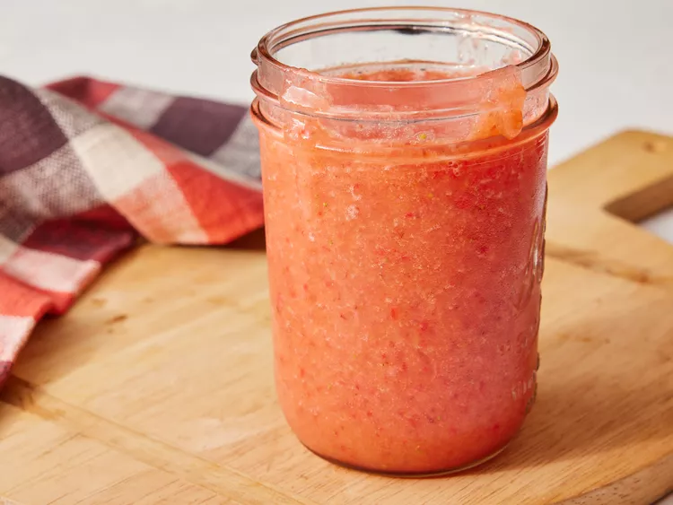

Basic Fruit Smoothie

Description
This is a great fruit smoothie recipe consisting of fruit, fruit juice, and ice.
I like to use whatever fresh fruits I crave that day... Berries, mangos, papayas, kiwi fruit, etc.
Experiment with your favorites!
Ingredients
- 1 quart strawberries, hulled
- 2 fresh peaches - peeled, pitted, and sliced
- 1 banana, broken into chunks
- 2 cups ice
- 1 cup orange-peach-mango juice
Steps
- Gather all ingredients.
- Combine strawberries, peaches, and banana in a blender; blend until smooth.
- Add ice and pour in juice; blend again to desired consistency.
- Enjoy!